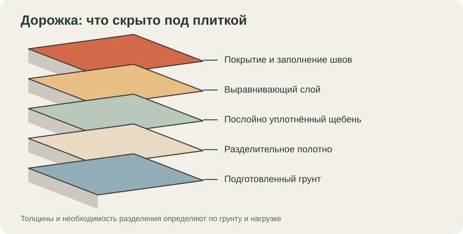

Тротуарная плитка: толщина и основание
Какую тротуарную плитку брать для дорожек и парковки.
Тротуарная плитка (брусчатка) бывает вибропрессованной и вибролитой. Вибропрессованная плотнее и морозостойче, поэтому для улицы предпочтительна именно она.
Толщина: 40–50 мм — для садовых дорожек, 60 мм — для пешеходных зон и площадок, 80 мм и более — для въезда и парковки автомобилей. Морозостойкость должна быть не ниже F200, водопоглощение — не более 6 %. Требования установлены ГОСТ 17608-2017.
Основание под плитку для пешеходной дорожки: выемка грунта 25–30 см, геотекстиль, слой щебня фракции 20–40 мм толщиной 15 см, слой песка 5 см. Каждый слой уплотняют виброплитой. Для парковки слой щебня увеличивают до 25–30 см.
Плитку укладывают с уклоном 1–2 % для стока воды, по краям устанавливают бордюр, а швы заполняют сухим песком.
Главное за минуту
- Тротуарная плитка (брусчатка) бывает вибропрессованной и вибролитой.
- Толщина: 40–50 мм — для садовых дорожек, 60 мм — для пешеходных зон и площадок, 80 мм и более — для въезда и парковки автомобилей.
- Основание под плитку для пешеходной дорожки: выемка грунта 25–30 см, геотекстиль, слой щебня фракции 20–40 мм толщиной 15 см, слой песка 5 см.

Проверить перед работой
- Определите нагрузку и направление стока воды.
- Разделите грунт и основание подходящим геотекстилем, если он предусмотрен.
- Уплотняйте основание послойно и контролируйте уклон до укладки покрытия.
Частые ошибки
- Уплотнять один толстый слой щебня вместо нескольких тонких.
- Направлять сток к дому или на соседний участок.
Источники и изображения
Основание дорожки: покрытие, выравнивающий слой, уплотнённый щебень, разделение и грунт. Толщины зависят от нагрузки и грунта. · Редакция ctroimir · Источник изображения · Авторская учебная схема
 Справочная статья
Справочная статья Вопрос-ответ
Вопрос-ответ